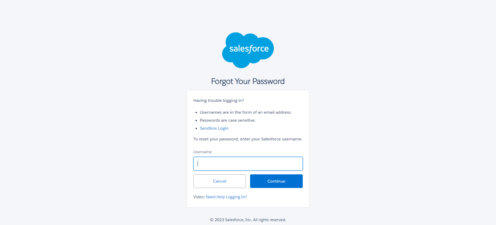

-
Login Functionality
9:54:10 AM / 00:00:23:722 Fail
Login Functionality
06.21.2023 9:54:10 AM 06.21.2023 9:54:33 AM 00:00:23:722 · #test-id=1Passlogin with correct credentialsGiven User open salesforce applicationcom.automation.allstepsdefs.LoginStepDefinition.after_Each_Scenario(io.cucumber.java.Scenario)after step executedWhen user on "loginpage"com.automation.allstepsdefs.LoginStepDefinition.after_Each_Scenario(io.cucumber.java.Scenario)after step executedWhen User enters value into text box username as "" com.automation.allstepsdefs.LoginStepDefinition.after_Each_Scenario(io.cucumber.java.Scenario)after step executedWhen User enters value into text box password as "" com.automation.allstepsdefs.LoginStepDefinition.after_Each_Scenario(io.cucumber.java.Scenario)after step executedWhen Click on Login buttoncom.automation.allstepsdefs.LoginStepDefinition.after_Each_Scenario(io.cucumber.java.Scenario)after step executedThen verify we can see "homepage"com.automation.allstepsdefs.LoginStepDefinition.after_Each_Scenario(io.cucumber.java.Scenario)after step executedPassLogin with valid username and no passwordGiven User open salesforce applicationcom.automation.allstepsdefs.LoginStepDefinition.after_Each_Scenario(io.cucumber.java.Scenario)after step executedWhen user on "loginpage"com.automation.allstepsdefs.LoginStepDefinition.after_Each_Scenario(io.cucumber.java.Scenario)after step executedWhen User enters value into text box username as "" com.automation.allstepsdefs.LoginStepDefinition.after_Each_Scenario(io.cucumber.java.Scenario)after step executedWhen User should clear text box password as "" com.automation.allstepsdefs.LoginStepDefinition.after_Each_Scenario(io.cucumber.java.Scenario)after step executedWhen Click on Login buttoncom.automation.allstepsdefs.LoginStepDefinition.after_Each_Scenario(io.cucumber.java.Scenario)after step executedThen verify error message is displayedcom.automation.allstepsdefs.LoginStepDefinition.after_Each_Scenario(io.cucumber.java.Scenario)after step executedFailTest remember username box is checkboxGiven User open salesforce applicationcom.automation.allstepsdefs.LoginStepDefinition.after_Each_Scenario(io.cucumber.java.Scenario)after step executedWhen user on "loginpage"com.automation.allstepsdefs.LoginStepDefinition.after_Each_Scenario(io.cucumber.java.Scenario)after step executedWhen User enters value into text box username as "" com.automation.allstepsdefs.LoginStepDefinition.after_Each_Scenario(io.cucumber.java.Scenario)after step executedWhen User enters value into text box password as "" com.automation.allstepsdefs.LoginStepDefinition.after_Each_Scenario(io.cucumber.java.Scenario)after step executedWhen User check the box of remember usernamecom.automation.allstepsdefs.LoginStepDefinition.after_Each_Scenario(io.cucumber.java.Scenario)after step executedWhen Click on Login buttoncom.automation.allstepsdefs.LoginStepDefinition.after_Each_Scenario(io.cucumber.java.Scenario)after step executedThen verify we can see "homepage"com.automation.allstepsdefs.LoginStepDefinition.after_Each_Scenario(io.cucumber.java.Scenario)after step executedWhen click on user menu dropodowncom.automation.allstepsdefs.LoginStepDefinition.after_Each_Scenario(io.cucumber.java.Scenario)after step executedscreenshotsAnd Select option of logout from dropdownStep skippedThen verify username is displayed on the username fieldStep skippedFailTest forgot passwordGiven User open salesforce applicationcom.automation.allstepsdefs.LoginStepDefinition.after_Each_Scenario(io.cucumber.java.Scenario)after step executedWhen user on "loginpage"com.automation.allstepsdefs.LoginStepDefinition.after_Each_Scenario(io.cucumber.java.Scenario)after step executedWhen user click on forgot password linkcom.automation.allstepsdefs.LoginStepDefinition.after_Each_Scenario(io.cucumber.java.Scenario)after step executedThen verify we can see "forgot your password" pagecom.automation.allstepsdefs.LoginStepDefinition.after_Each_Scenario(io.cucumber.java.Scenario)after step executedscreenshotsWhen user enter a usernameStep skippedWhen user click On continue buttonStep skipped
-
io.cucumber.core.exception.CucumberException
1 tests
io.cucumber.core.exception.CucumberException
1 failedStatus Timestamp TestName Fail 09:54:33 AM Then verify we can see "forgot your password" page Login Functionality.Test forgot password.Then verify we can see "forgot your password" page -
java.lang.NullPointerException
1 tests
java.lang.NullPointerException
1 failedStatus Timestamp TestName Fail 09:54:25 AM When click on user menu dropodown Login Functionality.Test remember username box is checkbox.When click on user menu dropodown
Started
Jun 21, 2023 09:54:09 AM
Ended
Jun 21, 2023 09:54:34 AM
Features Passed
0
Features Failed
1
Features
Scenarios
Steps
Timeline